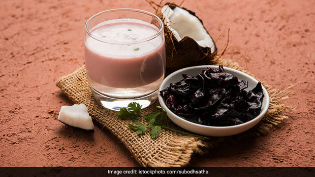

Misal Pav
Ingredients
- 1 cup sprouted moth beans (matki) , 2 cups water , 1/2 cup finely chopped onions , 1/4 cup finely chopped tomatoes , 1/4 cup farsan (spicy snack mix) , 2-3 Pav (Indian bread rolls) , 2 tablespoons oil , 1 teaspoon mustard seeds , 1 teaspoon cumin seeds , 1/2 teaspoon turmeric powder , 1 tablespoon red chili powder (adjust to taste) , 1 tablespoon misal masala (spice blend) , Salt to taste , Chopped coriander leaves for garnish , Lemon wedges for garnish
steps
- Rinse and drain the sprouted moth beans. Pressure cook them with 2 cups of water until they are soft, usually 2-3 whistles.
- In a pan, heat oil and add mustard seeds and cumin seeds. Let them splutter.
- Add finely chopped onions and sauté until they turn translucent.
- Add chopped tomatoes and cook until they become soft and mushy.
- Add turmeric powder, red chili powder, misal masala, and salt. Mix well and sauté for a couple of minutes.
- Add the cooked sprouted moth beans along with some of the water from the pressure cooker. Mix and simmer for about 10-15 minutes, allowing the flavors to meld.
- To serve, place the misal in a bowl, top it with farsan, chopped coriander leaves, and a squeeze of lemon juice.
- Serve hot with pav (Indian bread rolls) on the side.

Sol Kadhi
Ingredients
- 1 cup fresh coconut milk , 1/2 cup water , 1/2 cup yogurt , 4-5 cloves of garlic, minced , 1-2 green chilies, finely chopped (adjust to taste) , 1/2 teaspoon cumin seeds , 1/2 teaspoon turmeric powder , Salt to taste , Fresh coriander leaves for garnish.
steps
- In a mixing bowl, combine fresh coconut milk, water, and yogurt. Mix well to form a smooth mixture.
- In a small pan, heat a teaspoon of oil. Add cumin seeds and let them splutter.
- Add minced garlic and chopped green chilies. Sauté for a minute or until the garlic turns aromatic.
- Pour this tempering into the coconut milk and yogurt mixture.
- Add turmeric powder and salt to taste. Stir well to combine.
- Chill the Sol Kadhi in the refrigerator for at least 30 minutes before serving.
- Garnish with fresh coriander leaves before serving.

Veg Maratha
Ingredients
- 2 cups mixed vegetables (e.g., carrots, peas, potatoes), diced , 1 cup cauliflower florets , 1 cup diced bell peppers (capsicum) , 2 onions, finely chopped , 2 tomatoes, finely chopped , 2 tablespoons oil , 1 teaspoon cumin seeds , 2-3 cloves garlic, minced , 1-inch piece of ginger, grated , 2-3 green chilies, finely chopped (adjust to taste) , 1 teaspoon red chili powder (adjust to taste) , 1/2 teaspoon turmeric powder , 1 teaspoon garam masala , Salt to taste , Fresh coriander leaves for garnish
Steps
- Heat oil in a pan and add cumin seeds. Let them splutter.
- Add minced garlic, grated ginger, and chopped green chilies. Sauté for a minute until fragrant.
- Add finely chopped onions and sauté until they turn translucent.
- Add the diced mixed vegetables, cauliflower florets, and bell peppers. Sauté for a few minutes.
- Add the chopped tomatoes and cook until they become soft and the oil begins to separate.
- Stir in red chili powder, turmeric powder, garam masala, and salt. Mix well.
- Add a little water if needed, cover the pan, and simmer until the vegetables are cooked and the flavors meld together.
- Garnish with fresh coriander leaves before serving.

Dal Bati Churma
Ingredients
- 2 cups whole wheat flour , 1/2 cup semolina (sooji) ,1/2 cup ghee (clarified butter) , 1/2 cup yogurt , 1/2 teaspoon salt , 1/2 teaspoon baking powder , Water, as needed . Ingredients for Dal (Lentil Curry): 1 cup mixed lentils (toor dal, chana dal, moong dal) , 1 onion, finely chopped , 2 tomatoes, finely chopped , 2-3 green chilies, slit , 1/2 teaspoon turmeric powder , 1 teaspoon cumin seeds , 1/2 teaspoon mustard seeds , 1/2 teaspoon asafoetida (hing) , 1/2 teaspoon garam masala , 1/2 teaspoon red chili powder (adjust to taste) , Salt to taste , Fresh coriander leaves for garnish , Ghee for serving , Ingredients for Churma (Sweet Crumbled Wheat): cup whole wheat flour , 1/4 cup ghee , 1/4 cup powdered jaggery , A pinch of cardamom powder , Chopped nuts (optional)
Steps
- For Bati: 1. Mix whole wheat flour, semolina, ghee, yogurt, salt, and baking powder. 2. Knead into a stiff dough using water as needed. 3. Bake the bati in a preheated oven at 350°F (180°C) for about 30-40 minutes or until they are golden brown.
- For Dal: 1. Cook the mixed lentils in a pressure cooker until soft. 2. In a separate pan, heat oil, add cumin seeds, mustard seeds, asafoetida, and green chilies. 3. Add chopped onions and sauté until they turn translucent. 4. Add tomatoes, turmeric powder, red chili powder, and salt. Cook until the tomatoes are soft.
- For Churma: 1. Roast whole wheat flour in ghee until it turns golden brown. 2. Add powdered jaggery and cardamom powder.Mix well. 3. Let it cool, then crumble the mixture.

Chana Masala
Ingredients
- 1 onion chopped , 1 tomato chopped , 1 (1 inch) piece fresh ginger, peeled and chopped , 4 cloves garlic, chopped, or more to taste , 1 green chile pepper, seeded and chopped (Optional) , 3 tablespoons olive oil , 2 fresh bay leaves , 1 teaspoon chili powder , 1 teaspoon coriander powder , 1 teaspoon garam masala , ½ teaspoon turmeric powder , water as needed , 1 (15 ounce) can chickpeas , 1 teaspoon fresh cilantro leaves, for garnish, or more to taste
steps
- Grind onion, tomato, ginger, garlic, and chile pepper together in a food processor into a paste.
- Heat olive oil in a large skillet over medium heat. Fry bay leaves in hot oil until fragrant, about 30 seconds. Pour the paste into the skillet and cook until the oil begins to separate from the mixture and is golden brown in color, 2 to 3 minutes. Season the mixture with chili powder, coriander, gram masala, turmeric, and salt; cook and stir until very hot, 2 to 3 minutes.
- Stir enough water into the mixture to get a thick gravy; bring to a boil and stir chickpeas into the gravy. Reduce heat to medium and cook until the chickpeas are heated through, 5 to 7 minutes. Garnish with cilantro.